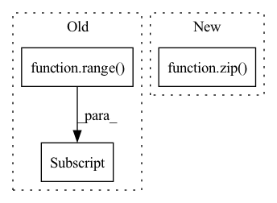

Pattern ID :1436
Before Change
def forward(self, codes: torch.ByteTensor) -> torch.Tensor:
smallQ = self._reverses[-1](self._quantizers[-1](codes[-1]))
for i in range( self._levels - 1, -1, -1) :
q = self._scatters[i](self._quantizers[i](codes[i] ))
smallQ = self._reverses[i](q + smallQ)
return self._decoder(smallQ).tanh()
After Change
def forward(self, codes: List[torch.LongTensor], cAndPadding: torch.Tensor) -> Tuple[torch.Tensor, torch.Tensor]:
smallQ = self._reverses0(self._quantizers0(codes[0]))
for i, (scatter, quantizer, reverse) in enumerate(zip( self._scatters, self._quantizers, self._reverses) ):
code = codes[i + 1]
q = scatter(quantizer(code))
smallQ = reverse(q + smallQ)In pattern: SUPERPATTERN
Frequency: 3
Non-data size: 3
Instances Fragment ID: 4933519
Project Name: xiaosu-zhu/mcquic
Commit Name: 5eab1f3405e52a0cf81c11777abe1eafeb655b59
Time: 2021-10-08
Author: xiaosu.zhu@outlook.com
File Name: src/mcqc/evaluation/refModel.py
M Class Name: RefDecoder
N Class Name: RefDecoder
M Method Name: forward(3)
N Method Name: forward(2)
M Parent Class: nn.Module
N Parent Class: nn.Module
M File Name: src/mcqc/evaluation/refModel.py
N File Name: src/mcqc/evaluation/refModel.py
M Start Line: 181
M End Line: 185
N Start Line: 217
N End Line: 224
Before Change
def forward(self, x: torch.Tensor) -> List[torch.LongTensor]:
codes = list()
latent = self._encoder(x)
for i in range( self._levels) :
head = self._heads[i]
z = head(latent)
if i < self._levels - 1:
mapper = self._mappers[i]
latent = mapper(latent)After Change
def forward(self, x: torch.Tensor, cAndPadding: torch.Tensor) -> Tuple[List[torch.LongTensor], torch.Tensor]:
codes = list()
latent = self._encoder(x)
for head, mapper, quantizer, deQuantizer in zip( self._heads, self._mappers, self._quantizers, self._deQuantizers) :
z = head(latent)
latent = mapper(latent)
code = quantizer(z) Fragment ID: 4933518
Project Name: xiaosu-zhu/mcquic
Commit Name: 5eab1f3405e52a0cf81c11777abe1eafeb655b59
Time: 2021-10-08
Author: xiaosu.zhu@outlook.com
File Name: src/mcqc/evaluation/refModel.py
M Class Name: RefEncoder
N Class Name: RefEncoder
M Method Name: forward(3)
N Method Name: forward(2)
M Parent Class: nn.Module
N Parent Class: nn.Module
M File Name: src/mcqc/evaluation/refModel.py
N File Name: src/mcqc/evaluation/refModel.py
M Start Line: 136
M End Line: 150
N Start Line: 154
N End Line: 167
Before Change
def forward(self, input, hidden_state=None):
output = []
for step in range( input.size(1)) :
// Compute current time-step
hidden_state = self.rnn_cell(input[:, step, :, :, :] , hidden_state)
output.append(hidden_state)
// Stack the list of output hidden states into a tensor
output = torch.stack(output, 0)After Change
layer_output_list = []
last_state_list = []
for l, (gru_cell, hid_dp) in enumerate(zip( self.cell_list, self.hidden_dps) ):
h = hidden_state[l]
output_inner = []
for t in range(seq_len): Fragment ID: 4933516
Project Name: openclimatefix/skillful_nowcasting
Commit Name: 02c5ceadd01484d6ac8bce848ff76446fe7a6917
Time: 2021-10-18
Author: jacob@bieker.tech
File Name: nowcasting_gan/layers/ConvGRU.py
M Class Name: ConvGRU
N Class Name: ConvGRU
M Method Name: forward(3)
N Method Name: forward(3)
M Parent Class: nn.Module
N Parent Class: nn.Module
M File Name: nowcasting_gan/layers/ConvGRU.py
N File Name: nowcasting_gan/layers/ConvGRU.py
M Start Line: 269
M End Line: 276
N Start Line: 196
N End Line: 221